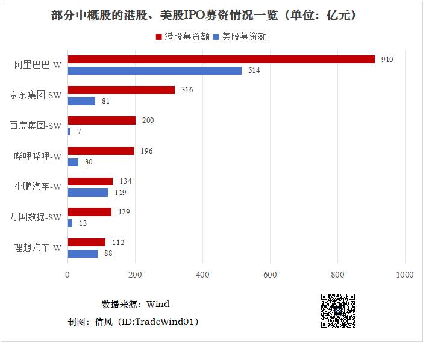
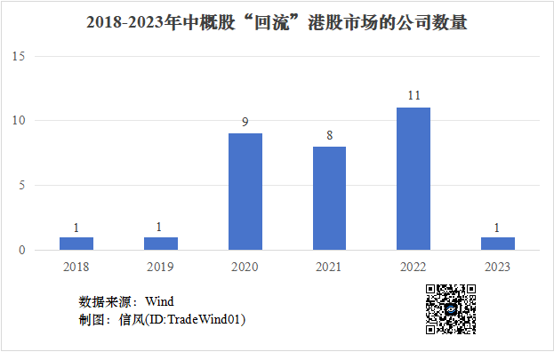
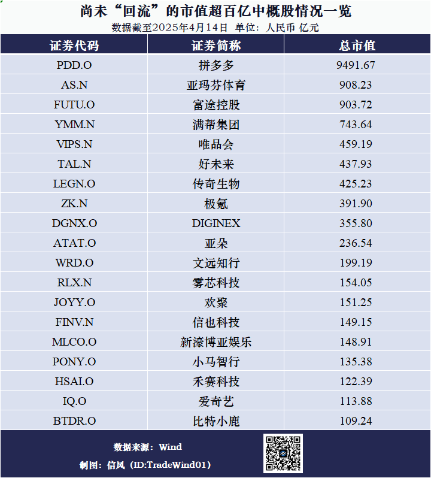

地缘风险的升温，正在给美股市场的中概股（以下统称“中概股”）带来更多变数。
近期香港财政司司长陈茂波在一篇名为《百年变局中又一香港机遇》随笔中表示，已指示证券及期货事务监察委员会和香港交易所做好准备，若在海外上市的中概股希望回流，必须让香港成为它们首选的上市地。
其实早在数年前，香港早已成为不少中概股“回流”的首选地。
据信风不完全统计，2018年至2024年已有31家中概股选择回港，实现“美+港”的两地上市安排，这些企业占中概股总市值的绝大部分。
在港交所进一步抛出的橄榄枝下，尚未回流的中概股是否会做出港股上市准备，正在被市场密切关注。
目前美股市值不低于百亿元（人民币、下同），且尚未在港上市的中概股仅有19家，市值合计超1.5万亿元，其中仅拼多多1家就接近万亿体量。
对于仍有赴美上市规划的中资企业而言，当下的资本运作路径又当如何规划，变化随时发生。 

超7成已“回港”
早在中美首次发生经贸关税摩擦的2018年以来，有关中概股的摘牌风险就已形成。
直到2020年美国《外国公司问责法》生效，这种风险更加被市场关注。
2年后，美国证券交易委员会（SEC）曾分批次将拼多多、京东、网易、小鹏汽车等超120家中概股列入预摘牌名单。
尽管实际摘牌并未成行，但面对潜在的政策风险，许多中概股依然未雨绸缪，寻求“回流”至A股、港股的可能。
回A的中概股多数选择从美股私有化或转为OTC（场外）交易。
信风据Wind不完全统计，2018年以来共有16家中概股回流至A股上市。
科创板成为不少企业的首选。创新药企百济神州（688235.SH）、复旦微电（688385.SH）等7家中概股“回流”至科创板。
这与科创板对财务的包容度有关——2019年科创板开板，允许未盈利企业、红筹架构（含VIE）公司上市，打破了传统A股的财务门槛限制。
这甚至一度吸引了美国科技公司美国像素（PXLW.US），其拟分拆中国子公司逐点半导体（上海）股份有限公司（下称“逐点半导体”）在科创板上市。
2023年，逐点半导体曾向证监局递交了IPO辅导材料，但目前仍未踏入IPO申报环节。
更多的中概股则选择奔赴港交所。
据信风不完全统计，2018年至2025年4月共有31家中概股赴港上市，实现“美+港”两地上市。
这当中尤以2020年至2022年的热情最为高涨，期间中概股回流数量分别达到9家、8家和11家。
这些“回港军团”，正是中概股的主力军。
截至4月14日收盘，这31家企业的总市值为4.94万亿元，同期387家中概股的总市值为6.86万亿元。
这意味着，目前中概股的7成以上已完成了“回港”。 

回流的“助推器”
港股加速回流的背后，与港交所在7年前释放的制度红利有关。
2018年，港交所推出了“二次上市”制度（Secondary Listing），即已在境外主要交易所（纽交所、纳斯达克、伦交所）完成首次上市的公司，可以通过存托凭证（DR）等形式在港交所挂牌交易。
由此衍生了中概股“回港”的两大路径：
一是“二次上市”模式。
该框架下，公司不仅可沿用原上市地的会计准则，还豁免关联交易和须予公布交易的股东批准及披露义务等，显著减轻了公司监管压力。
若公司发生海外除牌，则第二上市发行人即被视为主要上市发行人。
这意味着，即使中概股在美发生摘牌等极端情形，美国投资者可以将其持有的ADR转换为香港股票，降低投资风险。
二次上市模式，受到了不少中概股的欢迎。
据信风不完全统计，制度落地后的2018年至2024年，阿里巴巴、京东、网易、百度、携程等不少于19家中概股以二次上市的形式“回流”港股市场，占回港上市中概股的比例超6成。
以腾讯音乐为例，其2022年正是以二次上市的形式登陆港股市场，且采用介绍上市的方式并不需要发行股份融资，但又可以提高股票覆盖范围，进而规避在美的监管风险。
二是“双重上市”模式。
即指一家公司同时在两个或多个证券交易所挂牌上市，且在每个市场均需满足该交易所的全部上市规则和监管要求，形成相互独立的上市主体。
双重上市与二次上市并不冲突。
一些中概股通过二次上市登陆港股后，再度选择转双重上市形式进一步拥抱港股市场。
在前述19家回流香港的中概股中，阿里巴巴、B站、百胜中国、中通快递等合计7家公司均选择了先以第二上市登陆港股，再转为双重上市的路径进行操作。
双重上市具有更显著的比较优势。
原因在于，二次上市虽然具有更高效的流程和更低的操作成本，但无法被纳入港股通范围，难以获得境内机构的资金驰援，在一定程度上限制了交易便利和流动性。
市场普遍预期，若美股政策风险进一步加剧，不排除更多中概股会优先选择双重上市的路径回港。
还剩下谁
据信风不完全统计，目前市值在百亿元以上且尚未回港的中概股共有19家，市值合计超1.5万亿元，涵盖了拼多多、亚玛芬体育、富途控股、满帮集团等多家明星公司。
尚未回流的中概股总市值的“半壁江山”，基本指向了拼多多一家公司。
4月14日收盘，拼多多市值超9400亿元，占这19家中概股的比例超6成。
然而早在2020年6月，市场就曾有拼多多回港二次上市的猜测，但彼时其回应称“我们从未与任何中介机构探讨过这一计划，也未与任何交易所有过任何关于‘二次上市’话题的接触。”
随着此次风波再起，一旦拼多多回港成功，则其余18家未回港的公司在中概股总市值占比将不到1成。 

从美股市场“返港”，并非不能带来可观的融资助力。
2018年，百济神州港股IPO募集了高达61.66亿元，是2年在美上市募资额的近6倍；
2021年，B站赴港上市募集195.59亿元，是4年前在美募资的6倍多。
港股市场还在进一步转暖。
2025年一季度，香港市场共录得15只新股上市，融资总额达182亿港元，同比增长近3倍，在全球市场中位居第四，仅次于纳斯达克、纽交所和东京证券交易所。
就估值对比而言，美股和港股之间差异并不明显。
截至4月14日收盘，这31家中概股在美、港的PE（TTM）中位值分别为10.56倍、10.45倍。例如同期阿里巴巴两地的PE（TTM）分别为16.27倍、15.92倍。
这和两地上市的股份转换机制有关。
由于美股投资者可以按照一定的比例将其持有的中概股ADR按约定比例转换为港股普通股，这让两地之间难以产生套利空间，进而估值相近。
对于拟IPO企业来说，如何规划境外上市路线，同样是摆在当下的选择题。
仍有不少境内企业没有放弃美股上市的努力。
4月17日，中国新茶饮公司霸王茶姬将登陆纳斯达克，代码为“CHA”，募资金额介于28亿元-30亿元。
今年以来，已有不少于30家中概股登陆美股市场。
但面对眼下的地缘状态，不排除会有更多资本运作路线涌现。
一方面，先在港股上市，再根据业务发展择机美股融资，也成为相对保守的备选方案。
今年初登陆美股市场的创新药企亚盛医药（6855.HK）此前就已在港股上市，并成为了首家“先港股、后美股”的生物医药企业。
另一方面，还可根据不同市场进行针对性业务的分拆上市。
例如，企业可以将中国境内的业务和海外业务进行拆分成不同的公司主体。
其中，境内业务主体公司在港股上市，海外业务公司可在美股或在“美+港”两地上市，从而应对潜在风险。
已有公司采取类似操作。
2022年，火锅连锁商海底捞（6862.HK）分拆了特海国际（9658.HK）在港独立上市。
特海国际主要负责海底捞在中国大陆、中国港澳台地区以外的门店运营等，并于2024年登陆纳斯达克，实现“港+美”两地上市。
这一操作仍取决于公司自身的海外业务的体量，在规模有限的情况下，如此运作的实际意义并不显著。
整体来看，地缘政策波动与市场不确定性仍如达摩克利斯之剑高悬，中资企业或许仍需要进行谨慎权衡。
（实习生赵倩对本文亦有贡献）